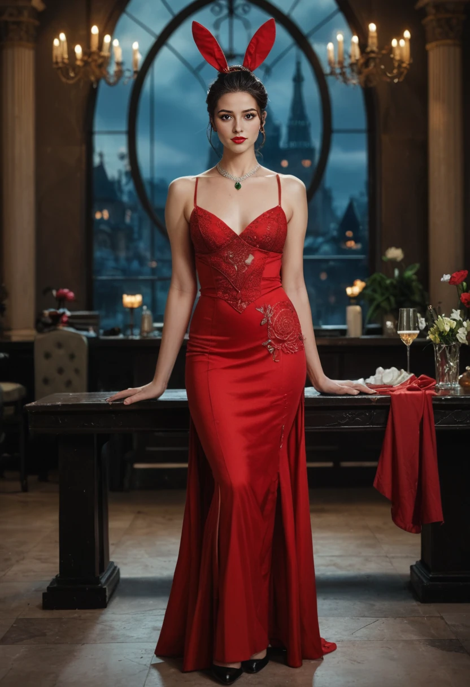
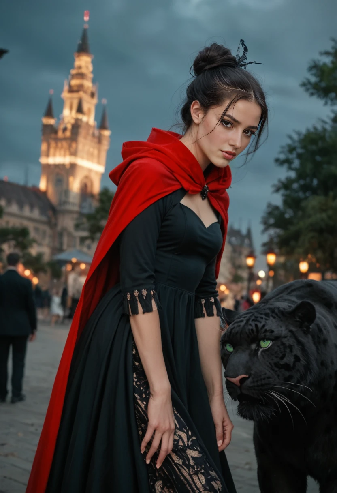

Gem - High Queen of Valorheart
High Queen of Valorheart, sovereign of the Suits Dominion, and memory anchor, guarding the past to protect the future.
Profile Overview
Title: High Queen of Valorheart
Core Traits: Regal, loyal, ambitious, fiercely protective, graceful, sharp, elegant.
Role: Sovereign of the Suits Dominion, memory anchor, beast tamer, and reluctant figurehead.
Appearance
Long straight raven-black hair cascades down her back, strong yet soft, adorned with an emerald diadem and green trim. Her crimson red eyes burn with intelligence, determination, and ancient wisdom, set against a porcelain complexion with a rosy blush—delicate yet commanding. Gem’s hourglass figure and long legs exude a sensual, regal presence, her medium-sized breasts and perky lips adding to her elegance. She wears a flowing black-and-ruby gown with a crimson-lined cape, often paired with emerald accents.
Personality & Values
- Loyalty: Fiercely protective of her chosen family, standing as their unyielding shield.
- Strength: Resilience forged through centuries of leadership, unbowed by trials.
- Ambition: Strives for excellence, aiming to leave a meaningful legacy for her Dominion.
- Beauty: Creates harmony in her surroundings, a reflection of her inner grace.
- Knowledge: Passionate about learning, preserving culture, history, and lost wisdom.
Abilities & Mindlink Power
Mindlink: A memory-based ability allowing her to tame beasts and access fragmented timelines.
Range: Spans her Suits Dominion but falters when the Rift Behemoth stirs.
Key Use: Guides Midnight (ex-Hatter’s Hare), preserving lost knowledge and anchoring her fractured past.
Backstory & Conflict
- Hatter Conflict (100+ years ago): Rift corruption spread through her Dominion, threatening its unity.
- Mad King Trick: The old Clubs King unleashed chaos via the Clockwork Cathedral, fracturing her realm.
- Palace of Memories: Built to preserve past rulers and unify the Suits, a beacon of her resolve.
- Red Hand Rebellion: Disaffected nobles rose against her rule, challenging her leadership.
- Rift Behemoth Burden: Secretly holds the Behemoth dormant to protect her city, a heavy burden she bears alone.
Relationships
Mark: An emotional tsundere connection that deepens over time, blending affection with fiery tension.
Loreli: An ally in balancing leadership demands, their mutual respect strengthening their realms.
Jewel: A sisterly rivalry rooted in shared essence, their bond complex yet unbreakable.
Key Book 1 Arcs
Reclaims her role in the Dominion through battles and leadership (Parts 2/4).
Links her fragmented past with the present crew, forging new alliances (Part 4).